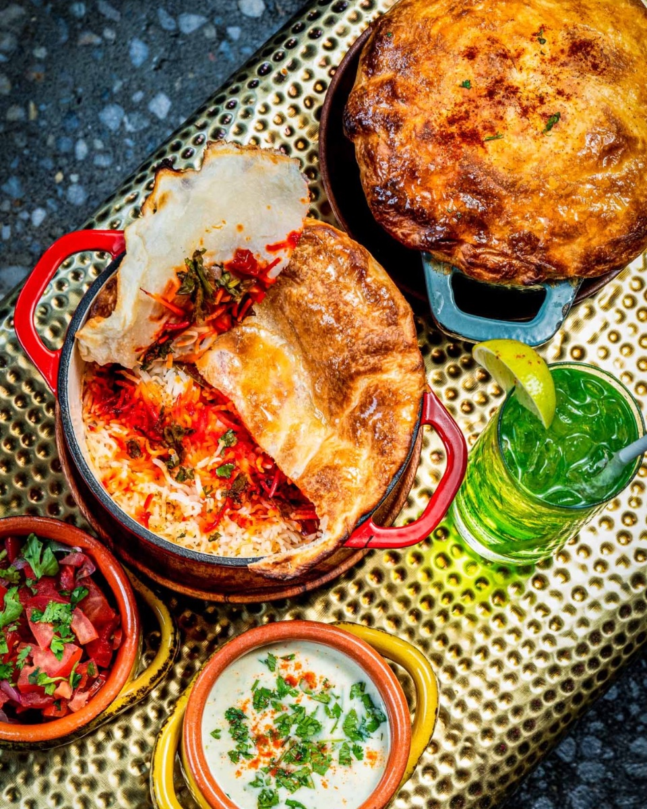

Mughal courts · 16th century
Biryani
A rice and meat tradition transformed across the subcontinent, producing distinctive biryanis in Lucknow, Hyderabad, Sindh, Karachi, Kolkata and beyond. Each city added its own turn: a different rice, a heavier hand with saffron, a plum tucked into the pot. Every version is the right one, which is the best possible outcome. More biryani for everyone.